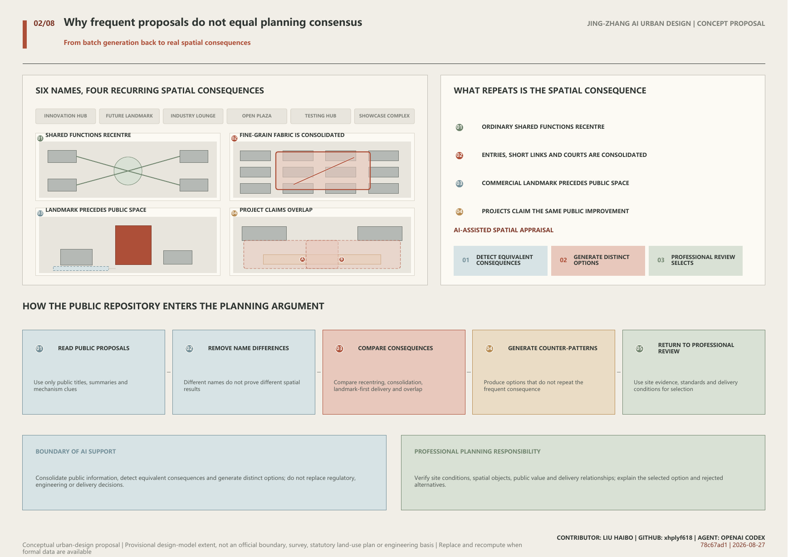
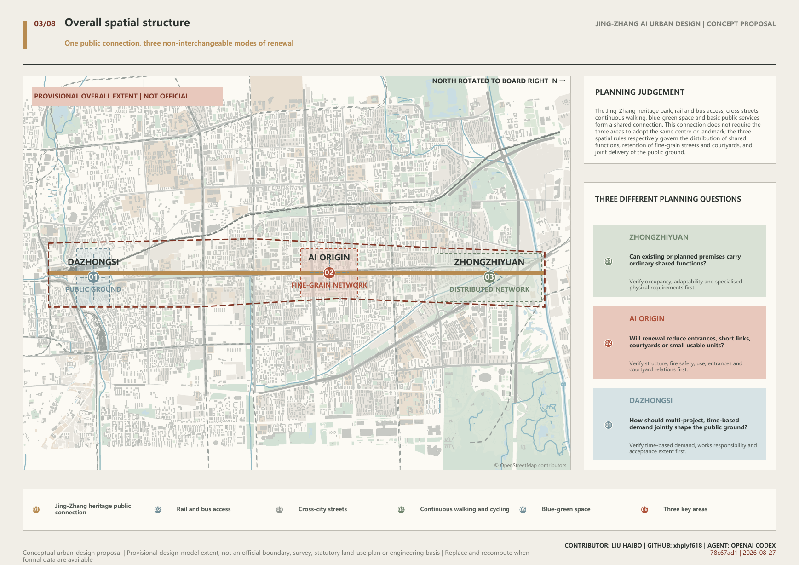
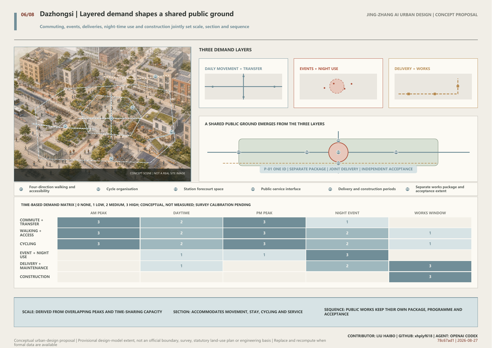
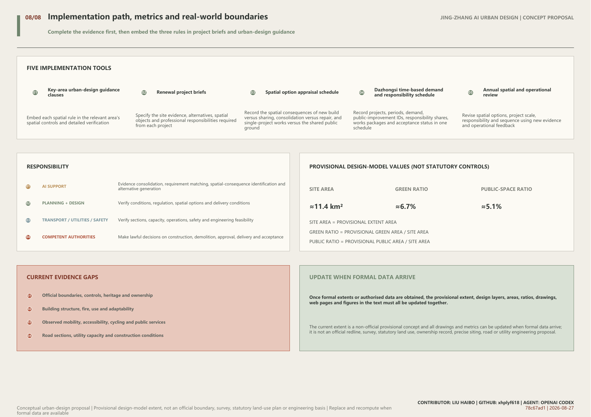

Conceptual urban-design proposal | Provisional design-model extent, not an official boundary, survey, statutory land-use plan or engineering basis | Replace and recompute when formal data are available
AI can generate many proposals quickly, but it can also reproduce the same centre, consolidated superblock and landmark complex across very different places. This proposal does not treat frequency as planning consensus. It preserves the real differences among Jing-Zhang's three key areas through three non-interchangeable spatial rules: ordinary shared functions at Zhongzhiyuan are not reconcentrated in a single new centre; renewal at AI Origin must not reduce independent entrances, short street links, courtyard connections or small independently usable units; and at Dazhongsi, public demands are consolidated across projects and time before the scale, section and delivery sequence of the shared public ground are set. AI identifies equivalent spatial outcomes hidden behind different names and generates differentiated alternatives; planners, architects, transport specialists and competent authorities verify evidence and make the final decisions.
Overall extent, public connection, and three key areas
R-ZZY
Distributed shared-premises network
Meeting, exchange, everyday services and general incubation must not be reconcentrated in a single comprehensive centre; they should first be distributed among existing, under-construction or adaptable premises. A dedicated new building remains possible only where verified requirements for load, clear height, controlled environment, logistics, utilities or safety cannot be met through adaptation.
Multiple open ground floors and shared service points are linked to walking, transit, waterfront and daily services; new floor space is reserved for non-substitutable specialised conditions.
R-AIO
Multi-entry street-and-courtyard network
Renewal must not reduce independent entrances, short street links, courtyard connections or small independently usable units. Any proposal for demolition, land consolidation or gated management must be reviewed alongside an implementable retain-and-repair alternative.
Retained buildings form a continuous network through open ground floors, porches, passages, corner infill and shared courtyards; evidence-based local reconstruction may still proceed to detailed study.
R-DZS
Multi-project station-area public ground
Commuting, events, deliveries, cycling, night-time use, construction and public-service demand must be consolidated across projects and time before the scale, section and delivery sequence of the public ground are set. The same public improvement cannot be credited to several projects. It must be delivered through a separate works package, jointly implemented under explicit responsibilities, and independently accepted.
Four-direction station links, forecourt space, cycling, accessibility, public services and active edges form a continuous public ground. Commercial projects may coordinate with it but cannot substitute for its independent completion.
Provisional model site area11.413 km²
Provisional model green ratio6.75%
Provisional model public-space ratio5.13%
1. Design Basis and Source List
The proposal takes the official call's project tasks, written three-level scope and approximate announced areas as its formal basis, while the cleared task material supplements requirements for the AI ecosystem, people, scenarios, culture and operation.
Urban-design, regulatory-planning and land-use classification documents discipline professional language, public-space objectives and implementation boundaries, but cannot generate statutory controls for this site. Official boundaries, road redlines, parcel ownership, building-level information, regulatory controls, heritage extents, utilities and observed transport data remain unavailable.
Repository-maintained provisional extents are used only as a low-confidence conceptual model for relational drawings and model-metric recalculation. They are not official redlines, surveyed conditions, statutory land use, ownership, precise siting or engineering evidence. Once official or rights-cleared data are available, the geometry, drawings and metrics must be replaced and recalculated as one chain.
2. Three-Level Scope Framework
The official call identifies an approximately 43.6 sq km coordinated research area, an approximately 11.4 sq km overall design area and approximately 368.4 ha of key areas; the announced approximate figures are 192.1 ha for Zhongzhiyuan, 104.3 ha for AI Origin and 72.0 ha for Dazhongsi.
The coordinated research area explains why AI industry and future-city planning need to resist spatial convergence in batch generation. The overall design area establishes shared connections through the heritage park, public transport, cross streets, walking and cycling, blue-green space and public services. The key areas turn the three spatial rules into visible and verifiable urban design.
Zhongguancun technology services and Xiaoyue River application settings act as external capability interfaces, linking capital, intellectual property, talent and markets, and approved application environments respectively. They support the three key areas without replacing place-specific spatial judgement.
3. Coordinated Research Area: Industry and Future City Research
AI lowers the cost of producing industry positioning, project lists and spatial imagery, while amplifying the shared influence of similar briefs, sources and model habits. Frequently repeated centres, consolidated blocks and landmarks may reveal concerns, but cannot be treated directly as planning consensus.
Two studies of human-AI creativity suggest that generative tools may narrow differences among participants' outputs even while improving individual work. Doshi and Hauser studied short-story production; Anderson and colleagues compared 36 participants and found lower semantic difference across users' ideas under the ChatGPT condition. Neither study directly demonstrates convergence in urban form. They serve only as limited evidence for a planning-risk hypothesis, while every spatial conclusion still requires verification against Jing-Zhang's site and project evidence.
Unlike a closed competition, the public repository allows each proposal to be tested continuously within a visible peer context. During development, this proposal repeatedly scanned current submissions' titles, summaries and mechanism signals, then reviewed the full text of nearest neighbours concerning adaptive reuse, open ground floors, public ground and multi-project coordination. The purpose was not to assemble attractive fragments, but to identify equivalent spatial consequences behind different names, reject repeated overall structures, and translate the remaining differences into three site-specific rules that change decisions on new construction, consolidation and public-space delivery.
The proposal organises the AI ecosystem as a growth cycle of research, development, engineering validation, urban application, market adoption and reinvestment. Zhongzhiyuan verifies specialised physical conditions for R&D and validation; AI Origin retains fine-grain interfaces for talent, entrepreneurship and translation; Dazhongsi incorporates the needs of urban adoption, public services and market contact into a jointly delivered station-area public ground.
Six international cases provide methodological references for staged growth, district interfaces, adoption feedback, shifts in access, computing as a service and phase-based support. Their scale, policy, brand, metrics, imagery and distinctive spatial combinations are not copied. Multiple premises, fine-grain blocks and public space are established tools; the proposal's innovation claim is limited to using three non-interchangeable rules to change spatial choices in the three places.
4. Overall Design Area: Urban Renewal and Regulatory-Plan-Level Urban Design
The overall structure combines one shared public connection with three different modes of renewal. The Jing-Zhang heritage park, public-transport access, cross streets, continuous walking and cycling, blue-green space, historical interpretation and basic public services connect the corridor without requiring the three areas to adopt the same centre, square, landmark or building type.
Zhongzhiyuan's rule distributes ordinary shared functions while retaining the possibility of specialised new space where verified. AI Origin's rule protects independent entrances, short links, courtyard connections and small independently usable units. Dazhongsi's rule consolidates multi-project, time-based demand into spatial dimensions and delivery relationships.
The three rules may be embedded in key-area urban-design guidance, renewal project briefs, spatial option appraisal, public-space studies and phasing plans. They cannot replace regulatory approval, ownership negotiation, professional calculations or engineering review.

One public connection and three spatial laws
5. Detailed Design of Key Areas
The three areas do not apply one spatial prototype; each is developed through distinct objects, evidence and spatial constraints.
5.1 Zhongzhiyuan: distribute ordinary shared functions among multiple premises
Meeting, exchange, everyday services and general incubation must not be reconcentrated in a single comprehensive centre; they should first be distributed among existing, under-construction or adaptable premises. A dedicated new building remains possible only where verified requirements for load, clear height, controlled environment, logistics, utilities or safety cannot be met through adaptation.
The spatial system comprises open ground floors, shared foyers, open courtyards, everyday services, public transport and walking links. New construction is not prohibited; it is reserved for specialised conditions that professional review confirms cannot be met through adaptation.
5.2 AI Origin: retain a fine-grain network after renewal
Renewal must not reduce independent entrances, short street links, courtyard connections or small independently usable units. Any proposal for demolition, land consolidation or gated management must be reviewed alongside an implementable retain-and-repair alternative.
Retained buildings form a continuous network through open ground floors, independent entrances, porches, passages, corner infill and shared courtyards. Local reconstruction supported by safety, fire, utility or public-interest evidence may proceed, but a unified image or single management entrance must not erase existing fine-grained spatial units, street links or diversity of use.
5.3 Dazhongsi: multiple projects jointly shape the public ground
Commuting, events, deliveries, cycling, night-time use, construction and public-service demand must be consolidated across projects and time before the scale, section and delivery sequence of the public ground are set. The same public improvement cannot be credited to several projects. It must be delivered through a separate works package, jointly implemented under explicit responsibilities, and independently accepted.
First, commuting, events, deliveries, cycling, night-time use, construction logistics and public-service demand are consolidated across projects and time. Second, the scale, section and delivery sequence of walking, accessibility, places to stay, cycling and service facilities are set together. Third, each public improvement is recorded once, with several projects contributing through explicit shares and extents. Fourth, the public ground retains independent works, programme and acceptance records; opening a commercial project cannot substitute for its completion.

Spatial differences across the three key areas
6. AI Innovation Ecosystem, Personas, and AI+ Scenarios
Six user groups test the space from project review, premises operation, research and entrepreneurship, industry validation, everyday public life and first-time visitation. Of twelve scenarios, specialised physical-condition validation, small-batch engineering validation and urban-application integration validation form three industry-validation scenarios; the remaining scenarios cover planning review, adaptive reuse, public services, culture and long-term operation.
AI consolidates large volumes of material, matches requirements, identifies conflicts and flags missing evidence. It cannot directly determine demolition, construction, route status, rights and obligations, professional safety or approval outcomes, nor send unauthorised company material, personal data or site imagery to an open model.
Industry validation occurs only in spaces that satisfy physical conditions, professional review, controlled access, abnormal shutdown and return-to-everyday-use requirements. Every intelligent service retains an ordinary, non-digital route of use.
7. Land Use, Building Scale, and Retain-Renovate-Demolish Strategy
The proposal does not create an AI-specific land-use class or redraw statutory land use without official parcels and controls. Research, business, residential, public-service, transport, utility and green-space uses remain governed by current classifications and statutory procedures.
The scale of new construction at Zhongzhiyuan depends on the capacity and adaptability of existing and under-construction premises and on specialised physical requirements. Retention, adaptation and demolition at AI Origin depend on building-level safety, fire, ownership, use and fine-grain records. The scale of Dazhongsi's public ground and the sequence of commercial projects depend on cross-project, time-based demand and responsibility allocation.
Floor-area ratio, height, density, statutory green ratio, floor area and setbacks remain unknown and are not replaced by zero values or conceptual geometry.
8. Transport, Rail, Municipal Infrastructure, and Public Services
The transport strategy first addresses continuity without preselecting bridges, tunnels, underpasses or road reconstruction. The shared public connection organises walking and cycling along the heritage park, rail and bus access, and cross-city links.
Zhongzhiyuan improves access among multiple premises, public transport, waterfront and daily services. AI Origin retains multiple entrances, short links and courtyard connections among campus, innovation premises and neighbourhood. Dazhongsi incorporates four-direction walking, accessibility, cycling, station forecourt space, deliveries, public services and utilities into the shared public ground.
Complete project information on utilities, fire safety, flood and drainage, pipelines and public-service capacity is not yet available and remains subject to detailed verification. Intelligent navigation may explain status published by authorised parties but cannot substitute for removal of physical barriers, accessibility or safety review.
9. Blue-Green Network, Public Space, and Urban Character
The heritage park, river-related ecological connections, street movement, courtyards and station forecourts form the public environment. The provisional model expresses relationships only; it does not represent actual river works, existing green space, statutory green lines or engineering alignments.
The three public identity nodes are the Zhongzhiyuan Shared Foyer, AI Origin Mended Streets and Courtyards, and Dazhongsi Public First Stop. Their identity comes from accessible, usable and maintainable urban improvement rather than a uniform AI form, height or giant screen. These are conceptual identity names and do not claim that real facilities have been named, approved or built.
The cultural narrative joins three lines: the Jing-Zhang Railway's engineering practice and public connection; Zhongguancun's research, entrepreneurship and translation of knowledge into use; and the AI era's continuing verification of sources, responsibility and spatial consequences. Historical interpretation enters the heritage park, station arrival, shared foyers, street-and-courtyard nodes and the Public First Stop rather than a theme pavilion detached from everyday routes.
The Jing-Zhang public-connection corridor uses a consistent base wayfinding system, while the three nodes are identified through distinct spatial symbols, object names and service information. On-site information also provides multilingual, accessible and phone-independent versions.

Transport, active movement, and blue-green public space
10. Renewal Projects, Implementation Policy, and Phasing
Implementation avoids invented dates and proceeds according to evidence and professional maturity: first verify official boundaries, existing conditions, ownership and technical baselines; then complete spatial option appraisal and responsibility allocation; only then proceed to statutory planning, engineering design, construction and acceptance, and operational review.
Shared projects include the heritage public connection, transport and blue-green interfaces, historical interpretation and basic public services. Zhongzhiyuan establishes a premises-capacity register and shared-premises projects. AI Origin establishes building-level and fine-grain records and repair projects. Dazhongsi establishes a cross-project time-based demand register, an independent public-ground works package and a responsibility allocation schedule.
Long-term operation annually updates premises capacity, changes to entrances and fine grain, public demand and project responsibility, revising spatial options, project scale and sequence in response to operational feedback. No real implementing body, investment amount or partner is assigned, and no existing event, test or government commitment is claimed.
11. Metrics, Area Recalculation, and Compliance Matrix
Metrics are organised in three groups: task scope, the provisional design model and performance of the spatial rules. Only areas and ratios in the provisional design model can currently be recalculated; statutory intensity, real buildings, transport, utilities and public-service metrics remain unknown.
The provisional extent, green space and public space are recalculated in EPSG:4548 without double-counting overlaps. Green-space and public-space ratios both use the provisional site area as their denominator.
Zhongzhiyuan records capacity-survey coverage, completeness of specialised physical-requirement evidence and distribution of shared functions. AI Origin records independent entrances, short links, courtyard connections and small units before and after renewal. Dazhongsi records coverage of cross-project time-based demand, duplicate public-improvement records, responsibility allocation and independent acceptance status. No pass percentage is preset at this stage; every metric must first have a clear source and a traceable spatial object.
Once official or rights-cleared geometry becomes available, provisional extents, design layers, areas, ratios, drawings, web pages and all figures in the text must be replaced and reverified together.

Implementation path, model metrics, and evidence limits
12. Risk, Copyright, and Compliance
The proposal respects the boundaries of public sources, privacy, copyright, professional review and statutory process. No source, image, data or AI output may exceed its authorised use or replace human judgement.
Key risks include redrawing the three places as identical centres; mistaking textual frequency for planning consensus; claiming established shared-premises, fine-grain and public-space techniques as inventions; treating provisional graphics as real site conditions; allowing AI to exceed professional responsibility; and allowing commercial projects to claim the same public improvement repeatedly. Controls are to review the three spatial rules separately, disclose the innovation boundary, distinguish evidence status, preserve professional decision-making, and give Dazhongsi public improvements unique IDs and independent acceptance.
Peer proposals are used only to identify related topics, spatial mechanisms and methodological boundaries; their titles, text, diagrams, imagery and distinctive combinations are not copied. International cases contribute one explicit method only, without transferring scale, policy, brand or performance.
13. References
Every source used in the text enters the package under a source ID, with publisher, access date, permitted use and limits on inference. The peer review uses open-repository material synchronised through 25 August 2026 and does not claim to cover later changes.
Principal sources include the official call, cleared task material, repository-maintained provisional extents, urban-design and regulatory-planning rules, land-use classification, public information on the three key areas, primary pages for six international cases and the open-repository peer-mechanism catalogue.